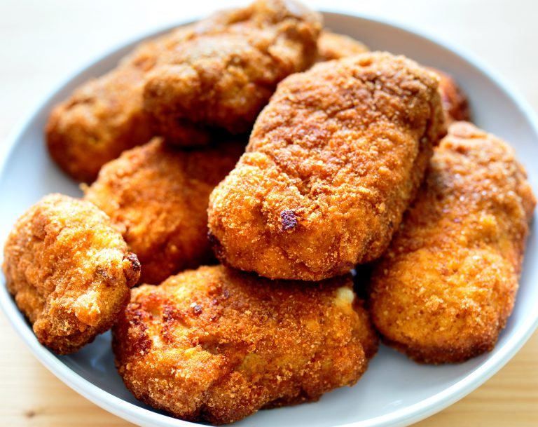

Timpi de preparare
- Timp de preparare: 15 min
- Timp de gatire: 30 min
- Gata în: 45 min
Ingrediente
- 2 bucăți de piept de pui (circa 200g fiecare)
- 4 felii cașcaval
- 4-6 felii de șuncă (circa 80 g)
- 1 ou
- 2 linguri de făină
- pesmet (sau pâine uscată bine fărâmițată, să fie mai crocant)
- ulei/unt topit
Mod de preparare
Rețeta perfectă de cordon bleu de pui la cuptor: rapidă, perfectă pentru o cină pregătită pe repede înainte într-o zi de lucru,
sănătoasă deoarece se face la cuptor și nu se prăjește în ulei.
Rețeta de cordon belu de pui este și extrem de gustoasă. Urmează rețeta de mai jos!

Un interior aromat și moale, învelit într-o crustă super crocantă: așa trebuie să fie un cordon bleu.
Și așa va fi, dacă îl faci după rețeta de mai jos.
Ți-am structurat toate ingredientele de care ai nevoie și îți spunem pas cu pas ce ai de făcut pentru a obține cel mai bun cordon bleu de pui la cuptor!
-
Combină pesmetul /pâinea uscată fărâmițată cu puțin ulei/unt topit într-un bol.
Împrăștie-le pe fundul unei tăvi și dă-le la prăjit în cuptorul încins pentru 3 minute.
Scoate-le imediat și pune-le într-un bol.
-
Taie transversal fiecare piept de pui (crestează un buzunar). Împăturește fiecare felie de brânză o dată și bagă 2 felii în fiecare pui.
Fă la fel cu feliile de șuncă. Prinde cu scobitori să nu pirzi umplutura. Asezonează cu sare și piper.
-
Bate oul cu făina. Dă bucățile de pui prin mixtura de ou și apoi prin pesmet.
Pune-le pe tavă și stropește-el ușor cu ulei/unt topit. Dă la cuptor 25-30 de minute sau până când observi că sunt aurii la exterior și bine pătrunse.
Lasă la răcit 5 minute înainte de servire.
O porție de cordon bleu de pui la cuptor poate fi servită în orice moment al zilei împreună cu o salată de legume, cu murături sau chiar un piure de cartofi.